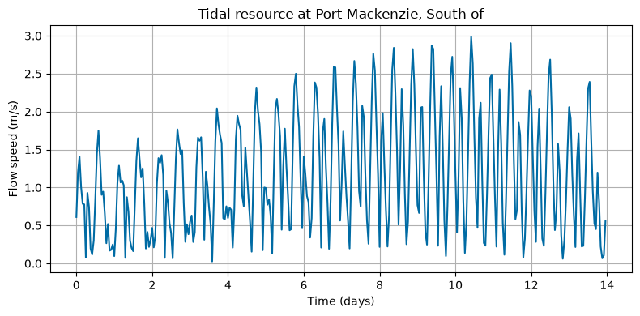
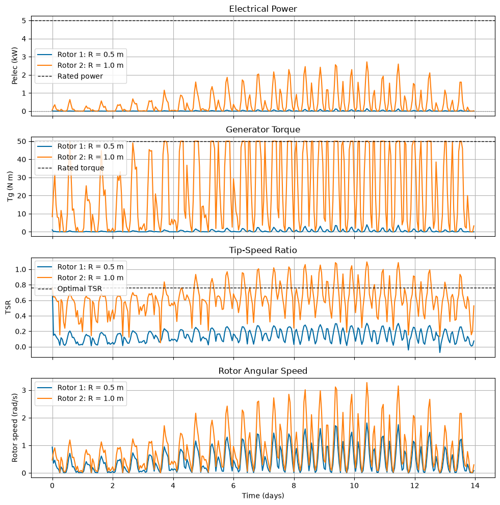

Tutorial 4: Simulating Rotor Performance (module_rotor_simulation)
This tutorial demonstrates how to use the RotorSimulation class to simulate turbine performance using tidal resource data and rotor performance data.
The tutorial compares two rotor configurations with different radii:
Rotor 1: radius = 0.5 m
Rotor 2: radius = 1.0 m
For simplicity, the two configurations use the same tidal resource, rotor performance curves, drivetrain parameters, and power-conversion model. Only the rotor radius is changed.
This tutorial covers:
Loading tidal resource data.
Loading rotor performance data.
Defining simulation configuration dictionaries.
Running
RotorSimulation.Comparing electrical power, torque, TSR, and rotor speed.
Notes for new users
This tutorial uses the built-in
simplepower-conversion model.The
simplemodel requires generator constantsKtandRw.The rotor simulation uses the adjusted flow speed at turbine depth.
Pelecis the main electrical power output used by later LCOE and constraint tutorials.The drivetrain and generator parameters are held fixed for comparison. In a real design study, parameters such as inertia, rated torque, and generator constants may need to scale with rotor size.
[1]:
import numpy as np
import matplotlib.pyplot as plt
import urllib3
from vital.module_tidal import process_tidal_data
from vital.module_rotor import RotorData
from vital.module_rotor_simulation import RotorSimulation
# Suppress warnings caused by NOAA requests using verify=False internally.
urllib3.disable_warnings(urllib3.exceptions.InsecureRequestWarning)
1. Load tidal resource data
First, load tidal resource data using process_tidal_data.
This tutorial uses the same basic NOAA workflow introduced in the tidal-data tutorial. If NOAA access is unavailable, see the tidal-data tutorial for local-file workflows.
[2]:
station = "COI0303"
startdate = "2021-09-01"
range_hrs = 2 * 7 * 24
time_step_s = 3600
city_data_file = "../data/AlaskaCityLatLong.txt"
tidal = process_tidal_data(
station=station,
startdate=startdate,
range_hrs=range_hrs,
time_step_s=time_step_s,
city_data_file=city_data_file,
)
print(f"Data source: {tidal.source}")
print(f"Station name: {tidal.station_name}")
print(f"Mooring distance: {tidal.mooring_distance:.2f} m")
print(f"Number of time points: {len(tidal.times)}")
Data source: NOAA
Station name: Port Mackenzie, South of
Mooring distance: 31.10 m
Number of time points: 336
[3]:
time_days = tidal.times / (3600 * 24)
plt.figure(figsize=(8, 4))
plt.plot(time_days, tidal.flow_speeds)
plt.xlabel("Time (days)")
plt.ylabel("Flow speed (m/s)")
plt.title(f"Tidal resource at {tidal.station_name}")
plt.grid(True)
plt.tight_layout()
plt.show()

2. Load rotor performance data
Next, load rotor performance data using the RotorData class.
The rotor file provides TSR, Ct, and Cq. VITAL computes the power coefficient internally as:
The resulting rotor object provides coefficient functions used by the simulation:
rotor.get_cprotor.get_cqrotor.get_ct
[4]:
rotor_performance_file = "../data/Sitkana_rotor_data_blade_2.txt"
rotor = RotorData(rotor_performance_file)
print(f"Optimal Cp: {rotor.CpOpt:.4f}")
print(f"Optimal TSR: {rotor.TSROpt:.4f}")
print(f"Estimated TSRmax: {rotor.TSRmax:.4f}")
Optimal Cp: 0.2119
Optimal TSR: 0.7648
Estimated TSRmax: 1.7084
3. Define two rotor configurations
The two configurations below use the same drivetrain, generator, and tidal inputs. The only parameter changed is rotor radius.
This makes the comparison easier to interpret.
[5]:
base_config = {
"Prated": 5000.0, # Rated electrical power (W)
"Trated": 50.0, # Rated generator torque (N m)
"dHub": 2.0, # Hub depth (m)
"dMoor": tidal.mooring_distance, # Mooring depth/distance (m)
"Uinf": tidal.flow_speeds, # Tidal flow speed time series (m/s)
"t": tidal.times, # Time vector (s)
# Rotor performance functions
"CpFunc": rotor.get_cp,
"CqFunc": rotor.get_cq,
"CtFunc": rotor.get_ct,
"CpOpt": rotor.CpOpt,
"TSROpt": rotor.TSROpt,
"TSRmax": rotor.TSRmax,
# Drivetrain and generator parameters
"Ng": 20,
"Kt": 1.5,
"Rw": 0.5,
"J_d": 5.0,
"B_d": 1.0,
"J_r": 10.0,
# Power-conversion model
"power_model": "simple",
}
config_rotor1 = base_config.copy()
config_rotor1["Radius"] = 0.5
config_rotor2 = base_config.copy()
config_rotor2["Radius"] = 1.0
4. Run rotor simulations
Now run the dynamic rotor simulation for both configurations.
[6]:
rotor_sim1 = RotorSimulation(config_rotor1)
rotor_sim1.simulate()
results_rotor1 = rotor_sim1.get_results()
rotor_sim2 = RotorSimulation(config_rotor2)
rotor_sim2.simulate()
results_rotor2 = rotor_sim2.get_results()
Solving the initial value problem (IVP) for turbine dynamics...
IVP solving complete.
Solving the initial value problem (IVP) for turbine dynamics...
Rated torque exceeded. Switching to open-loop dynamics...
IVP solving complete.
5. Summarize simulation results
The simulation returns time histories for rotor speed, generator torque, thrust, hydrodynamic power, mechanical power, electrical power, and other quantities.
Here we print a few simple summary metrics.
[7]:
def summarize_results(name, config, results):
print(name)
print("-" * len(name))
print(f"Radius: {config['Radius']:.2f} m")
print(f"Mean adjusted flow speed: {np.mean(results['Uinf_adjusted']):.3f} m/s")
print(f"Max adjusted flow speed: {np.max(results['Uinf_adjusted']):.3f} m/s")
print(f"Mean Pelec: {np.mean(results['Pelec']) / 1000:.3f} kW")
print(f"Max Pelec: {np.max(results['Pelec']) / 1000:.3f} kW")
print(f"Mean TSR: {np.mean(results['TSR']):.3f}")
print(f"Max TSR: {np.max(results['TSR']):.3f}")
print(f"Mean generator torque: {np.mean(results['Tg']):.3f} N m")
print(f"Max generator torque: {np.max(results['Tg']):.3f} N m")
print()
summarize_results("Rotor 1", config_rotor1, results_rotor1)
summarize_results("Rotor 2", config_rotor2, results_rotor2)
Rotor 1
-------
Radius: 0.50 m
Mean adjusted flow speed: 1.177 m/s
Max adjusted flow speed: 2.988 m/s
Mean Pelec: 0.010 kW
Max Pelec: 0.138 kW
Mean TSR: 0.144
Max TSR: 0.765
Mean generator torque: 0.457 N m
Max generator torque: 3.904 N m
Rotor 2
-------
Radius: 1.00 m
Mean adjusted flow speed: 1.177 m/s
Max adjusted flow speed: 2.988 m/s
Mean Pelec: 0.463 kW
Max Pelec: 2.718 kW
Mean TSR: 0.619
Max TSR: 1.096
Mean generator torque: 23.266 N m
Max generator torque: 50.000 N m
6. Compare time-series outputs
The plots below compare electrical power, generator torque, tip-speed ratio, and rotor speed for the two rotor radii.
[8]:
time_days = results_rotor1["t"] / (3600 * 24)
fig, ax = plt.subplots(4, 1, figsize=(10, 10), sharex=True)
# Electrical power
ax[0].plot(time_days, results_rotor1["Pelec"] / 1000, label="Rotor 1: R = 0.5 m")
ax[0].plot(time_days, results_rotor2["Pelec"] / 1000, label="Rotor 2: R = 1.0 m")
ax[0].axhline(base_config["Prated"] / 1000, color="k", linestyle="--", linewidth=1, label="Rated power")
ax[0].axhline(0.0, color="gray", linestyle=":", linewidth=1)
ax[0].set_ylabel("Pelec (kW)")
ax[0].set_title("Electrical Power")
ax[0].legend()
ax[0].grid(True)
# Generator torque
ax[1].plot(time_days, results_rotor1["Tg"], label="Rotor 1: R = 0.5 m")
ax[1].plot(time_days, results_rotor2["Tg"], label="Rotor 2: R = 1.0 m")
ax[1].axhline(base_config["Trated"], color="k", linestyle="--", linewidth=1, label="Rated torque")
ax[1].set_ylabel("Tg (N m)")
ax[1].set_title("Generator Torque")
ax[1].legend()
ax[1].grid(True)
# Tip-speed ratio
ax[2].plot(time_days, results_rotor1["TSR"], label="Rotor 1: R = 0.5 m")
ax[2].plot(time_days, results_rotor2["TSR"], label="Rotor 2: R = 1.0 m")
ax[2].axhline(rotor.TSROpt, color="k", linestyle="--", linewidth=1, label="Optimal TSR")
ax[2].set_ylabel("TSR")
ax[2].set_title("Tip-Speed Ratio")
ax[2].legend()
ax[2].grid(True)
# Rotor angular speed
ax[3].plot(time_days, results_rotor1["wr"], label="Rotor 1: R = 0.5 m")
ax[3].plot(time_days, results_rotor2["wr"], label="Rotor 2: R = 1.0 m")
ax[3].set_ylabel("Rotor speed (rad/s)")
ax[3].set_xlabel("Time (days)")
ax[3].set_title("Rotor Angular Speed")
ax[3].legend()
ax[3].grid(True)
plt.tight_layout()
plt.show()

Summary
This tutorial showed how to:
Load tidal resource data.
Load rotor performance data.
Configure the
RotorSimulationmodel.Run simulations for two rotor radii.
Compare electrical power, torque, TSR, and rotor speed.
The next tutorial uses the simulation results to evaluate design constraints such as power limits, rotor submergence, cavitation, and vessel pitch stability.